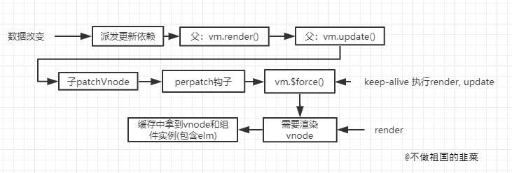
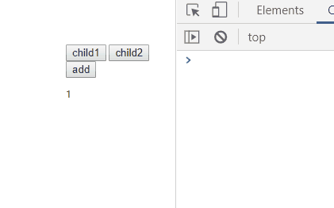

上一节，我们对
keep-alive组件的初始渲染流程以及组件的配置信息进行了源码分析。初始渲染流程最关键的一步是对渲染的组件Vnode进行缓存，其中也包括了组件的真实节点存储。有了第一次的缓存，当再次渲染组件时，keep-alive又拥有哪些魔法呢？接下来我们将彻底揭开这一层面纱。
13.5 准备工作§
上一节对keep-alive组件的分析，是从我画的一个流程图开始的。如果不想回过头看上一节的内容，可以参考以下的简单总结。
keep-alive是源码内部定义的组件选项配置，它会先注册为全局组件供开发者全局使用，其中render函数定义了它的渲染过程- 和普通组件一致，当父在创建真实节点的过程中，遇到
keep-alive的组件会进行组件的初始化和实例化。 - 实例化会执行挂载
$mount的过程，这一步会执行keep-alive选项中的render函数。 render函数在初始渲染时，会将渲染的子Vnode进行缓存。同时对应的子真实节点也会被缓存起来。
那么，当再次需要渲染到已经被渲染过的组件时，keep-alive的处理又有什么不同呢？
13.5.1 基础使用§
为了文章的完整性，我依旧把基础的使用展示出来，其中加入了生命周期的使用，方便后续对keep-alive生命周期的分析。
<div id="app">
<button @click="changeTabs('child1')">child1</button>
<button @click="changeTabs('child2')">child2</button>
<keep-alive>
<component :is="chooseTabs">
</component>
</keep-alive>
</div>
var child1 = {
template: '<div><button @click="add">add</button><p>{{num}}</p></div>',
data() {
return {
num: 1
}
},
methods: {
add() {
this.num++
}
},
mounted() {
console.log('child1 mounted')
},
activated() {
console.log('child1 activated')
},
deactivated() {
console.log('child1 deactivated')
},
destoryed() {
console.log('child1 destoryed')
}
}
var child2 = {
template: '<div>child2</div>',
mounted() {
console.log('child2 mounted')
},
activated() {
console.log('child2 activated')
},
deactivated() {
console.log('child2 deactivated')
},
destoryed() {
console.log('child2 destoryed')
}
}
var vm = new Vue({
el: '#app',
components: {
child1,
child2,
},
data() {
return {
chooseTabs: 'child1',
}
},
methods: {
changeTabs(tab) {
this.chooseTabs = tab;
}
}
})
13.5.2 流程图§
和首次渲染的分析一致，再次渲染的过程我依旧画了一个简单的流程图。

13.6 流程分析§
13.6.1 重新渲染组件§
再次渲染的流程从数据改变说起，在这个例子中，动态组件中chooseTabs数据的变化会引起依赖派发更新的过程(这个系列有三篇文章详细介绍了vue响应式系统的底层实现，感兴趣的同学可以借鉴)。简单来说，chooseTabs这个数据在初始化阶段会收集使用到该数据的相关依赖。当数据发生改变时，收集过的依赖会进行派发更新操作。
其中，父组件中负责实例挂载的过程作为依赖会被执行，即执行父组件的vm._update(vm._render(), hydrating);。_render和_update分别代表两个过程，其中_render函数会根据数据的变化为组件生成新的Vnode节点，而_update最终会为新的Vnode生成真实的节点。而在生成真实节点的过程中，会利用vitrual dom的diff算法对前后vnode节点进行对比，使之尽可能少的更改真实节点，这一部分内容可以回顾深入剖析Vue源码 - 来，跟我一起实现diff算法!，里面详细阐述了利用diff算法进行节点差异对比的思路。
patch是新旧Vnode节点对比的过程，而patchVnode是其中核心的步骤，我们忽略patchVnode其他的流程，关注到其中对子组件执行prepatch钩子的过程中。
function patchVnode (oldVnode,vnode,insertedVnodeQueue,ownerArray,index,removeOnly) {
···
// 新vnode 执行prepatch钩子
if (isDef(data) && isDef(i = data.hook) && isDef(i = i.prepatch)) {
i(oldVnode, vnode);
}
···
}
执行prepatch钩子时会拿到新旧组件的实例并执行updateChildComponent函数。而updateChildComponent会对针对新的组件实例对旧实例进行状态的更新，包括props,listeners等，最终会调用vue提供的全局vm.$forceUpdate()方法进行实例的重新渲染。
var componentVNodeHooks = {
// 之前分析的init钩子
init: function() {},
prepatch: function prepatch (oldVnode, vnode) {
// 新组件实例
var options = vnode.componentOptions;
// 旧组件实例
var child = vnode.componentInstance = oldVnode.componentInstance;
updateChildComponent(
child,
options.propsData, // updated props
options.listeners, // updated listeners
vnode, // new parent vnode
options.children // new children
);
},
}
function updateChildComponent() {
// 更新旧的状态，不分析这个过程
···
// 迫使实例重新渲染。
vm.$forceUpdate();
}
先看看$forceUpdate做了什么操作。$forceUpdate是源码对外暴露的一个api，他们迫使Vue实例重新渲染，本质上是执行实例所收集的依赖，在例子中watcher对应的是keep-alive的vm._update(vm._render(), hydrating);过程。
Vue.prototype.$forceUpdate = function () {
var vm = this;
if (vm._watcher) {
vm._watcher.update();
}
};
13.6.2 重用缓存组件§
由于vm.$forceUpdate()会强迫keep-alive组件进行重新渲染，因此keep-alive组件会再一次执行render过程。这一次由于第一次对vnode的缓存，keep-alive在实例的cache对象中找到了缓存的组件。
// keepalive组件选项
var keepAlive = {
name: 'keep-alive',
abstract: true,
render: function render () {
// 拿到keep-alive下插槽的值
var slot = this.$slots.default;
// 第一个vnode节点
var vnode = getFirstComponentChild(slot);
// 拿到第一个组件实例
var componentOptions = vnode && vnode.componentOptions;
// keep-alive的第一个子组件实例存在
if (componentOptions) {
// check pattern
//拿到第一个vnode节点的name
var name = getComponentName(componentOptions);
var ref = this;
var include = ref.include;
var exclude = ref.exclude;
// 通过判断子组件是否满足缓存匹配
if (
// not included
(include && (!name || !matches(include, name))) ||
// excluded
(exclude && name && matches(exclude, name))
) {
return vnode
}
var ref$1 = this;
var cache = ref$1.cache;
var keys = ref$1.keys;
var key = vnode.key == null ? componentOptions.Ctor.cid + (componentOptions.tag ? ("::" + (componentOptions.tag)) : '')
: vnode.key;
// ==== 关注点在这里 ====
if (cache[key]) {
// 直接取出缓存组件
vnode.componentInstance = cache[key].componentInstance;
// keys命中的组件名移到数组末端
remove(keys, key);
keys.push(key);
} else {
// 初次渲染时，将vnode缓存
cache[key] = vnode;
keys.push(key);
// prune oldest entry
if (this.max && keys.length > parseInt(this.max)) {
pruneCacheEntry(cache, keys[0], keys, this._vnode);
}
}
vnode.data.keepAlive = true;
}
return vnode || (slot && slot[0])
}
}
render函数前面逻辑可以参考前一篇文章，由于cache对象中存储了再次使用的vnode对象，所以直接通过cache[key]取出缓存的组件实例并赋值给vnode的componentInstance属性。可能在读到这里的时候，会对源码中keys这个数组的作用，以及pruneCacheEntry的功能有疑惑，这里我们放到文章末尾讲缓存优化策略时解答。
13.6.3 真实节点的替换§
执行了keep-alive组件的_render过程，接下来是_update产生真实的节点，同样的，keep-alive下有child1子组件，所以_update过程会调用createComponent递归创建子组件vnode,这个过程在初次渲染时也有分析过，我们可以对比一下，再次渲染时流程有哪些不同。
function createComponent (vnode, insertedVnodeQueue, parentElm, refElm) {
// vnode为缓存的vnode
var i = vnode.data;
if (isDef(i)) {
// 此时isReactivated为true
var isReactivated = isDef(vnode.componentInstance) && i.keepAlive;
if (isDef(i = i.hook) && isDef(i = i.init)) {
i(vnode, false /* hydrating */);
}
if (isDef(vnode.componentInstance)) {
// 其中一个作用是保留真实dom到vnode中
initComponent(vnode, insertedVnodeQueue);
insert(parentElm, vnode.elm, refElm);
if (isTrue(isReactivated)) {
reactivateComponent(vnode, insertedVnodeQueue, parentElm, refElm);
}
return true
}
}
}
此时的vnode是缓存取出的子组件vnode，并且由于在第一次渲染时对组件进行了标记vnode.data.keepAlive = true;,所以isReactivated的值为true,i.init依旧会执行子组件的初始化过程。但是这个过程由于有缓存，所以执行过程也不完全相同。
var componentVNodeHooks = {
init: function init (vnode, hydrating) {
if (
vnode.componentInstance &&
!vnode.componentInstance._isDestroyed &&
vnode.data.keepAlive
) {
// 当有keepAlive标志时，执行prepatch钩子
var mountedNode = vnode; // work around flow
componentVNodeHooks.prepatch(mountedNode, mountedNode);
} else {
var child = vnode.componentInstance = createComponentInstanceForVnode(
vnode,
activeInstance
);
child.$mount(hydrating ? vnode.elm : undefined, hydrating);
}
},
}
显然因为有keepAlive的标志，所以子组件不再走挂载流程，只是执行prepatch钩子对组件状态进行更新。并且很好的利用了缓存vnode之前保留的真实节点进行节点的替换。
13.7 生命周期§
我们通过例子来观察keep-alive生命周期和普通组件的不同。

在我们从child1切换到child2,再切回child1过程中，chil1不会再执行mounted钩子，只会执行activated钩子，而child2也不会执行destoryed钩子，只会执行deactivated钩子，这是为什么？child2的deactivated钩子又要比child1的activated提前执行，这又是为什么？
13.7.1 deactivated§
我们先从组件的销毁开始说起，当child1切换到child2时，child1会执行deactivated钩子而不是destoryed钩子，这是为什么？
前面分析patch过程会对新旧节点的改变进行对比，从而尽可能范围小的去操作真实节点，当完成diff算法并对节点操作完毕后，接下来还有一个重要的步骤是对旧的组件执行销毁移除操作。这一步的代码如下：
function patch(···) {
// 分析过的patchVnode过程
// 销毁旧节点
if (isDef(parentElm)) {
removeVnodes(parentElm, [oldVnode], 0, 0);
} else if (isDef(oldVnode.tag)) {
invokeDestroyHook(oldVnode);
}
}
function removeVnodes (parentElm, vnodes, startIdx, endIdx) {
// startIdx,endIdx都为0
for (; startIdx <= endIdx; ++startIdx) {
// ch 会拿到需要销毁的组件
var ch = vnodes[startIdx];
if (isDef(ch)) {
if (isDef(ch.tag)) {
// 真实节点的移除操作
removeAndInvokeRemoveHook(ch);
invokeDestroyHook(ch);
} else { // Text node
removeNode(ch.elm);
}
}
}
}
removeAndInvokeRemoveHook会对旧的节点进行移除操作，其中关键的一步是会将真实节点从父元素中删除，有兴趣可以自行查看这部分逻辑。invokeDestroyHook是执行销毁组件钩子的核心。如果该组件下存在子组件，会递归去调用invokeDestroyHook执行销毁操作。销毁过程会执行组件内部的destory钩子。
function invokeDestroyHook (vnode) {
var i, j;
var data = vnode.data;
if (isDef(data)) {
if (isDef(i = data.hook) && isDef(i = i.destroy)) { i(vnode); }
// 执行组件内部destroy钩子
for (i = 0; i < cbs.destroy.length; ++i) { cbs.destroy[i](vnode); }
}
// 如果组件存在子组件，则遍历子组件去递归调用invokeDestoryHook执行钩子
if (isDef(i = vnode.children)) {
for (j = 0; j < vnode.children.length; ++j) {
invokeDestroyHook(vnode.children[j]);
}
}
}
组件内部钩子前面已经介绍了init和prepatch钩子，而destroy钩子的逻辑更加简单。
var componentVNodeHooks = {
destroy: function destroy (vnode) {
// 组件实例
var componentInstance = vnode.componentInstance;
// 如果实例还未被销毁
if (!componentInstance._isDestroyed) {
// 不是keep-alive组件则执行销毁操作
if (!vnode.data.keepAlive) {
componentInstance.$destroy();
} else {
// 如果是已经缓存的组件
deactivateChildComponent(componentInstance, true /* direct */);
}
}
}
}
当组件是keep-alive缓存过的组件，即已经用keepAlive标记过，则不会执行实例的销毁，即componentInstance.$destroy()的过程。$destroy过程会做一系列的组件销毁操作，其中的beforeDestroy,destoryed钩子也是在$destory过程中调用，而deactivateChildComponent的处理过程却完全不同。
function deactivateChildComponent (vm, direct) {
if (direct) {
//
vm._directInactive = true;
if (isInInactiveTree(vm)) {
return
}
}
if (!vm._inactive) {
// 已经被停用
vm._inactive = true;
// 对子组件同样会执行停用处理
for (var i = 0; i < vm.$children.length; i++) {
deactivateChildComponent(vm.$children[i]);
}
// 最终调用deactivated钩子
callHook(vm, 'deactivated');
}
}
_directInactive是用来标记这个被打上停用标签的组件是否是最顶层的组件。而_inactive是停用的标志，同样的子组件也需要递归去调用deactivateChildComponent,打上停用的标记。最终会执行用户定义的deactivated钩子。
13.7.2 activated§
现在回过头看看activated的执行时机，同样是patch过程，在对旧节点移除并执行销毁或者停用的钩子后，对新节点也会执行相应的钩子。这也是停用的钩子比启用的钩子先执行的原因。
function patch(···) {
// patchVnode过程
// 销毁旧节点
{
if (isDef(parentElm)) {
removeVnodes(parentElm, [oldVnode], 0, 0);
} else if (isDef(oldVnode.tag)) {
invokeDestroyHook(oldVnode);
}
}
// 执行组件内部的insert钩子
invokeInsertHook(vnode, insertedVnodeQueue, isInitialPatch);
}
function invokeInsertHook (vnode, queue, initial) {
// delay insert hooks for component root nodes, invoke them after the
// 当节点已经被插入时，会延迟执行insert钩子
if (isTrue(initial) && isDef(vnode.parent)) {
vnode.parent.data.pendingInsert = queue;
} else {
for (var i = 0; i < queue.length; ++i) {
queue[i].data.hook.insert(queue[i]);
}
}
}
同样的组件内部的insert钩子逻辑如下：
// 组件内部自带钩子
var componentVNodeHooks = {
insert: function insert (vnode) {
var context = vnode.context;
var componentInstance = vnode.componentInstance;
// 实例已经被挂载
if (!componentInstance._isMounted) {
componentInstance._isMounted = true;
callHook(componentInstance, 'mounted');
}
if (vnode.data.keepAlive) {
if (context._isMounted) {
// vue-router#1212
// During updates, a kept-alive component's child components may
// change, so directly walking the tree here may call activated hooks
// on incorrect children. Instead we push them into a queue which will
// be processed after the whole patch process ended.
queueActivatedComponent(componentInstance);
} else {
activateChildComponent(componentInstance, true /* direct */);
}
}
},
}
当第一次实例化组件时，由于实例的_isMounted不存在，所以会调用mounted钩子，当我们从child2再次切回child1时，由于child1只是被停用而没有被销毁，所以不会再调用mounted钩子，此时会执行activateChildComponent函数对组件的状态进行处理。有了分析deactivateChildComponent的基础，activateChildComponent的逻辑也很好理解，同样的_inactive标记为已启用，并且对子组件递归调用activateChildComponent做状态处理。
function activateChildComponent (vm, direct) {
if (direct) {
vm._directInactive = false;
if (isInInactiveTree(vm)) {
return
}
} else if (vm._directInactive) {
return
}
if (vm._inactive || vm._inactive === null) {
vm._inactive = false;
for (var i = 0; i < vm.$children.length; i++) {
activateChildComponent(vm.$children[i]);
}
callHook(vm, 'activated');
}
}
13.8 缓存优化 - LRU§
程序的内存空间是有限的，所以我们无法无节制的对数据进行存储，这时候需要有策略去淘汰不那么重要的数据，保持最大数据存储量的一致。这种类型的策略称为缓存优化策略，根据淘汰的机制不同，常用的有以下三类。
1.FIFO： 先进先出策略，我们通过记录数据使用的时间，当缓存大小即将溢出时，优先清除离当前时间最远的数据。
2.LRU： 最近最少使用。LRU策略遵循的原则是，如果数据最近被访问(使用)过，那么将来被访问的几率会更高，如果以一个数组去记录数据，当有一数据被访问时，该数据会被移动到数组的末尾，表明最近被使用过，当缓存溢出时，会删除数组的头部数据，即将最不频繁使用的数据移除。
3.LFU: 计数最少策略。用次数去标记数据使用频率，次数最少的会在缓存溢出时被淘汰。
这三种缓存算法各有优劣，各自适用不同场景，而我们看keep-alive在缓存时的优化处理，很明显利用了LRU的缓存策略。我们看关键的代码
var keepAlive = {
render: function() {
···
if (cache[key]) {
vnode.componentInstance = cache[key].componentInstance;
remove(keys, key);
keys.push(key);
} else {
cache[key] = vnode;
keys.push(key);
if (this.max && keys.length > parseInt(this.max)) {
pruneCacheEntry(cache, keys[0], keys, this._vnode);
}
}
}
}
function remove (arr, item) {
if (arr.length) {
var index = arr.indexOf(item);
if (index > -1) {
return arr.splice(index, 1)
}
}
}
结合一个实际的例子分析缓存逻辑的实现。
1.有三个组件child1,child2,child3,keep-alive的最大缓存个数设置为2
2.用cache对象去存储组件vnode,key为组件名字，value为组件vnode对象，用keys数组去记录组件名字，由于是数组，所以keys为有序。
3.child1,child2组件依次访问，缓存结果为
keys = ['child1', 'child2']
cache = {
child1: child1Vnode,
child2: child2Vnode
}
4.再次访问到child1组件，由于命中了缓存，会调用remove方法把keys中的child1删除，并通过数组的push方法将child1推到尾部。缓存结果修改为
keys = ['child2', 'child1']
cache = {
child1: child1Vnode,
child2: child2Vnode
}
5.访问到child3时，由于缓存个数限制，初次缓存会执行pruneCacheEntry方法对最少访问到的数据进行删除。pruneCacheEntry的定义如下
function pruneCacheEntry (cache,key,keys,current) {
var cached###1 = cache[key];
// 销毁实例
if (cached###1 && (!current || cached###1.tag !== current.tag)) {
cached###1.componentInstance.$destroy();
}
cache[key] = null;
remove(keys, key);
}
删除缓存时会把keys[0]代表的组件删除，由于之前的处理，最近被访问到的元素会位于数组的尾部，所以头部的数据往往是最少访问的，因此会优先删除头部的元素。并且会再次调用remove方法，将keys的首个元素删除。
这就是vue中对keep-alive缓存处理的优化过程。